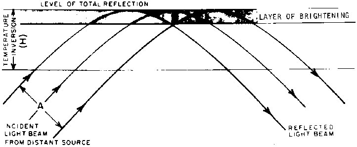

A recent theoretical and experimental investigation of the optical mirage is presented by Sir C. V. Raman (1959). Sir
C. V. Raman demonstrates that multiple, inverted images of a single object can arise from interference and focussing
of the incident and reflected wavefronts near the boundary of total reflection. Raman's work, which is entirely based
on wave theory, suggests the interaction of wavefronts within a refracting layer as a mechanism in mirage formation.
The occurrence of focussing and interference in situations that give rise to mirage, examined specifically by Raman,
is also evident from various investigations based on geometrical optics. For example, the crossing of light rays
mentioned in connection with image inversion implies interference of wavefronts at the points of intersection.
The visual effects from focussing and interference must be considered in particular when plane-parallel radiation
(radiation from a very distant source) is incident on a layer of total reflection. In this case, there is a constant
crossing of light rays within a relatively narrow region of the refracting layer, as illustrated in Fig. 12 (for the
sake of clarity, height and elevation angles are exaggerated). In Fig. 12, a circular collimated light-beam of
diameter A is incident on the lower boundary of a temperature-inversion layer at angle equal to or exceeding the
critical angle for total reflection. Interference of the incident and reflected wavefronts occurs in a selected layer
near the level of total reflection. This layer, shaded in Fig. 12, has a maximum thickness B, which is
dependent on A. In the absence of absorption, the amount of radiant energy, flowing per unit time through Pi·A2
equals that flowing through Pi·B2. When B is less than A, the energy density at
B is larger than at A, so that the brightness of the refracted light beam increases in the layer of
interference.
Figure 12 -
Energie en inversion - Increase in energy density near upper boundary of high-level temperature inversion

An example of the ratio of A to B can be Given with the aid of Eq. (3). It is assumed that the
optical refractive index through the inversion layer varies from
no = 1,00029 à n = 1,00026
according to
n2 = no2 - z.
When the angle of incidence is near the critical angle for total reflection
(Thetao ~ 89.5°),
the light rays within the inversion layer are parabolas and the level of total reflection coincides with the upper
boundary of the inversion layer. Under these conditions, it can be shown that
B/A = A/16H where H is the thickness of the temperature-inversion layer. When the diameter A of
the incident light beam is less than 16H, B is less than A and a brightening or focussing
occurs near the top of the inversion. When the angle of incidence of the light beam is larger than the critical
angle, ~89.5°, the level of total reflection lies below the upper boundary of the inversion layer. In this case,
brightening can still occur near the level of total reflection, but the restrictions on the required beam-diameter
become rather severe. The above example, based on a special case, demonstrates that sudden brightening can be
encountered near the upper boundary of a refracting layer when optical mirages are associated with a refracting
layer that is thick with respect to the diameter of the incident light beam from a distant source and when the
angle of incidence is near the critical angle.
Observations of the brightening phenomenon must be considered rare in view of the selective location of its
occurrence within the temperature-inversion layer and the requirement of plane-parallel incident radiation.
Upper-level inversions seem most likely to produce the phenomenon. Some photographs showing apparent brightening of
"spike" reflections on the edge of the setting sun are shown in O'Connell (1958, c.f., p. 158).
Figure 13 - Wavefront Diagram -
Simplified construction of wavefronts in region of interference and focussing
Microscopic effects due to interference of wavefronts within the area of brightening are illustrated in
Fig. 13. Wavefronts are indicated rather than light rays. Unless absorption is extremely large, light rays are
normal to the wavefront. A train of plane-parallel waves is assumed incident on the lower boundary of a refracting
layer in which the refractive-index decreases with height. When the angle of incidence equals the critical angle,
the incident waves are refracted upon entering the refracting layer and are totally reflected at the upper boundary
The crests and troughs of the waves are indicated by solid lines and dashed lines, respectively. At the upper
boundary, the wavefronts of the incident and reflected waves converge to a focus. The focus is called a cusp. The
upper boundary of the refracting layer resembles a caustic, i.e., an envelope of the moving cusps of the propagating
wavefronts. Because of the focussing of wavefronts, a large concentration of radiant energy is usually found along
the caustic (see Raman, 1959). In the area where the incoming and outgoing wavefronts interact, destructive
interference is found along AA' and CC' (troughs meeting crests), while constructive interference is
found along BB' (incident and reflected waves have similar phase). Hence, brightness variations can be
expected in the interference layer, as demonstrated by Sir C. V. Raman (1959). To what extent the microscopic
effects from interference and focussing can be observed under actual atmospheric conditions of mirage is not known.
Undoubtedly, the proper relation between refracting layer and distant light source must be combined with an
observer's position near the upper boundary of the refracting layer. If the dark and bright bands in the area of
interference can be observed, the observer could easily get the impression that he is viewing a rapidly oscillating
light or a light that is drawing near and moving away at rapid intervals. Nighttime observations by airplane are
most likely to provide proper evidence of this effect.
Currently, the focussing and interference effects are the least explored and consequently the least discussed of
the various aspects associated with optical mirage.